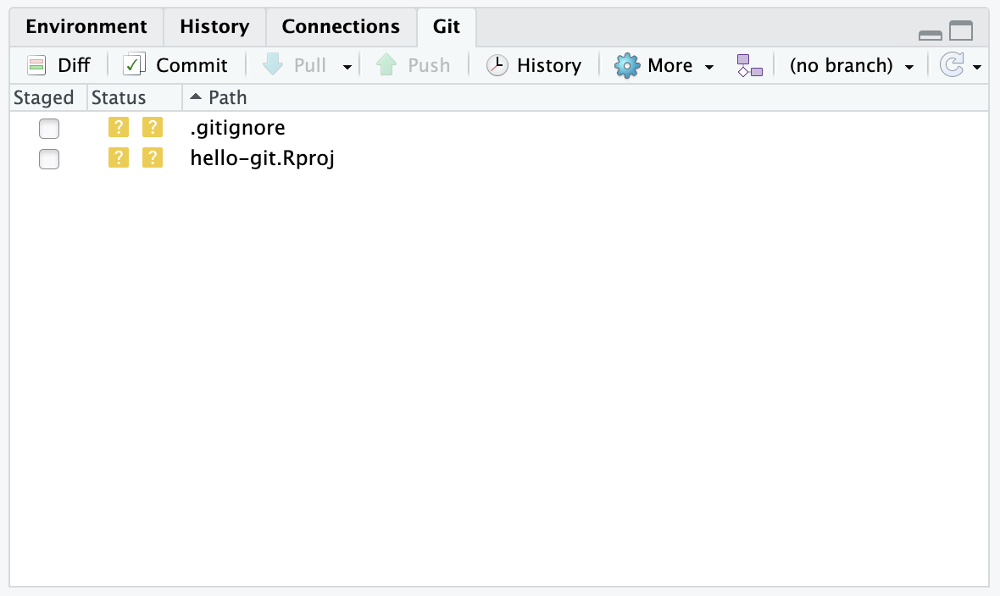
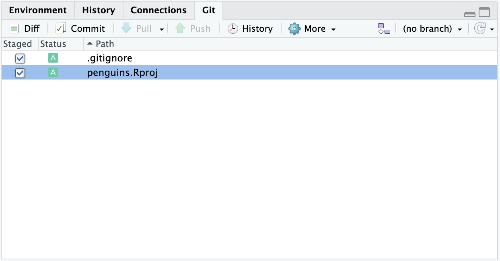
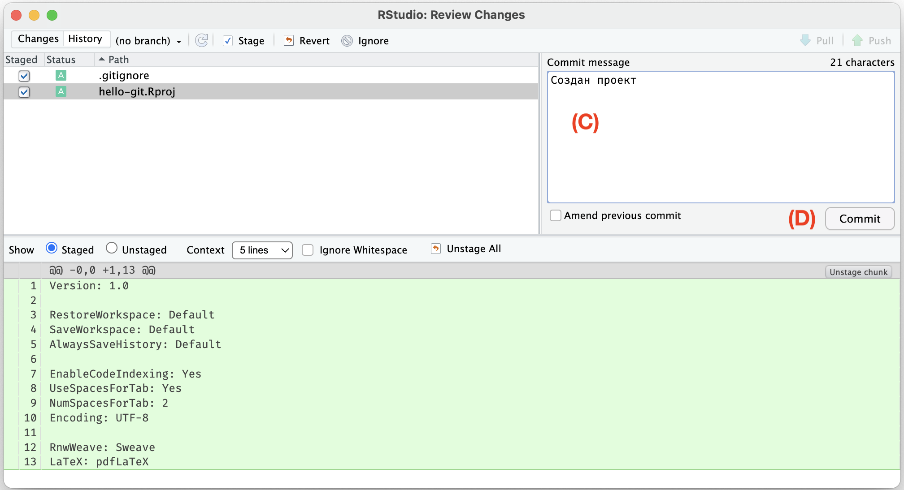
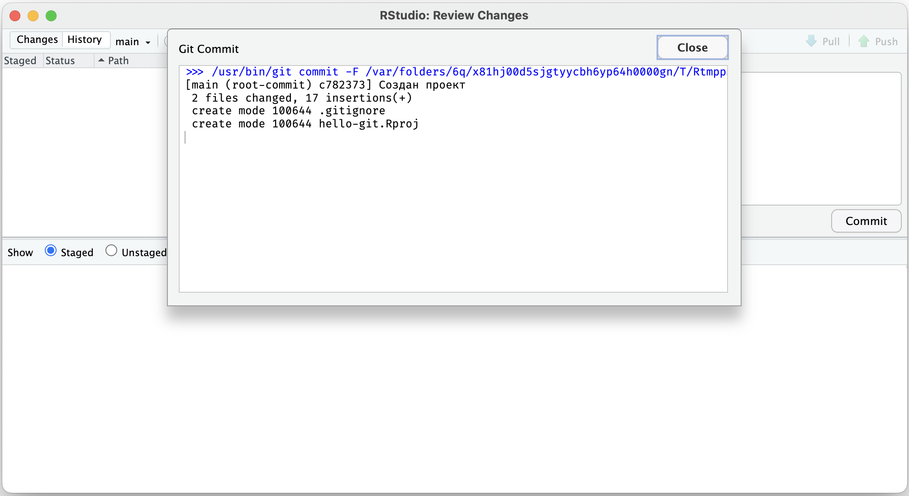
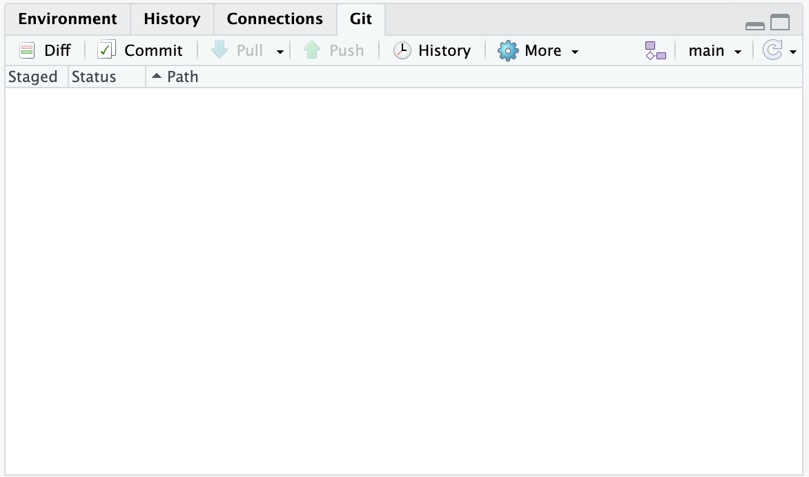
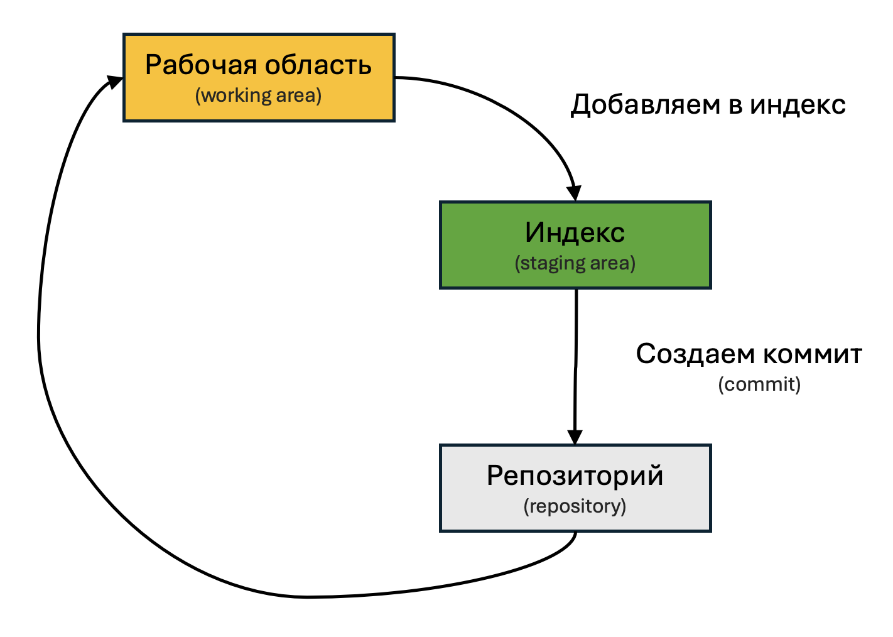

Глава 6 Отслеживание изменений
Git отслеживает изменения в файлах, находящихся внутри репозитория. Но не все подряд, как скажем, это делает блокнот или Word (при помощи команды «Отменить», Ctrl+Z), а только то, что поменялось с последней версии. Поэтому периодически необходимо фиксировать изменения в версии — так называемые «коммиты» (commit).
Для работы с Git в RStudio предусмотрена панель с соответствующим названием Git (по умолчанию находится в верхнем правом углу).
Нет панели Git?
Значит, вы не отметили галочку Create a git repository при создании проекта или не установили Git. Исправьте ошибку и создайте проект заново.
В отличие от списка файлов на этой панели выводятся только те файлы, которые были изменены с последнего коммита (версии).
Так как мы еще не создали ни одной версии, то в списке выведены оба файла, созданных с проектом: .gitignore и hello-git.Rproj
Для создания коммита (версии) необходимо отметить изменения, которые вы хотите зафиксировать, проверить их, снабдить небольшим описанием и зафиксировать.
Итак, отметьте файлы галочкой в столбце Staged на панели Git (A). Обратите внимание на название столбца (staged) — мы поместили отмеченные файлы в так называемую промежуточную область (staging), и только они будут зафиксированы, остальные файлы останутся в папке, но не будут добавлены в коммит (версию). Нажмите кнопку Commit (B).

В открывшемся окне можно подробнее ознакомиться с фиксируемыми изменениями. Введите краткое описание в поле Commit message, которое характеризует сделанные изменения (C). В нашем случае был создан проект — это и будет хорошим описанием внесенных изменений.

Нажмите кнопку Commit (D). В появившемся окне не должно быть ошибок, но должно быть сообщение, как на изображении.

Можно закрыть оба окна и вернуться к RStudio. Обратите внимание, теперь панель Git со списком измененных файлов пуста — у нас нет изменений относительно последней версии, которую мы только что создали.

Итак, мы добавили файлы в промежуточную область (staging) и создали из них первый коммит (версию) нашего проекта. И теперь имеем версию, к которой всегда можно вернуться и начать работу с этого места. Процесс работы с Git схематично выглядит следующим образом.

Вопрос 1. Что такое «коммит»?
- Так называются все файлы в папке
- Промежуточное хранилище для файлов
- Зафиксированная версия проекта, к которой можно вернуться в любой момент
- Список измененных файлов
Вопрос 2. Что необходимо сделать, чтобы изменения файлов попали в коммит в RStudio?
- Достаточно просто сохранить файлы
- Отметить измененные файлы галочкой в столбце Staged
- Ввести описание в поле Commit message и нажать Commit
- Сохранить файлы и перезапустить RStudio
Вопрос 3. Сколько файлов вы видите на панели Git в RStudio?
(Для проверки, что все идет по плану.)
- Ни одного
- Два файла
- Три или четыре файла
- Гораздо больше
(Выбрать один термин - коммит или версия, а не указывать в скобках?)